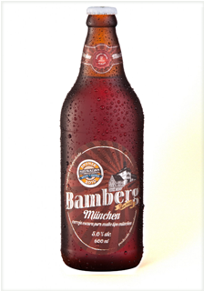

- Chope, 355 ml e 600 ml.
Bamberg Munchen
Cerveja classificada como estilo Munich Dunkel, é uma cerveja de baixa fermentação com 5,0% de teor alcoólico. Harmoniza com carnes de porco, culinária mexicana, carnes vermelhas e pratos apimentados. Temperatura ideal de consumo entre 4ºC e 8ºC.
Aroma: Presença marcante dos maltes, caramelo, biscoito, além do floral proveniente do lúpulo.
Aparência: Coloração marrom avermelhada, com espuma persistente.
Sabor: Os maltes são as estrelas dessa cerveja que possui notas de caramelo, toffee e casca de pão. Para equilibrar a doçura dos maltes, a presença de amargor proveniente do lúpulo é fundamental.
Sensação na boca: Corpo médio, com média carbonatação.